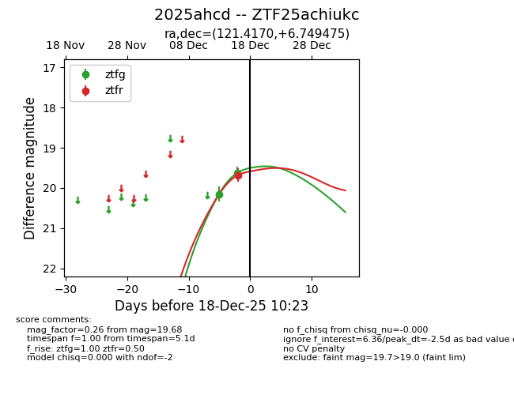
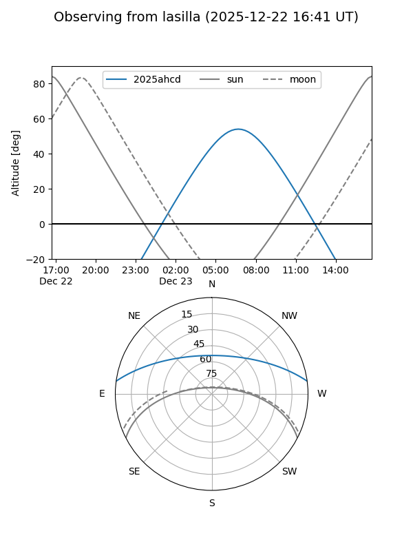
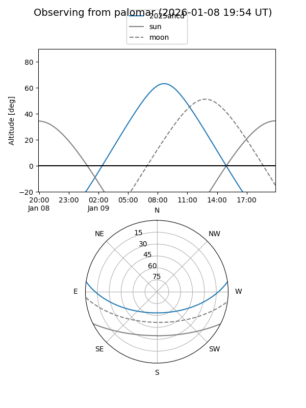
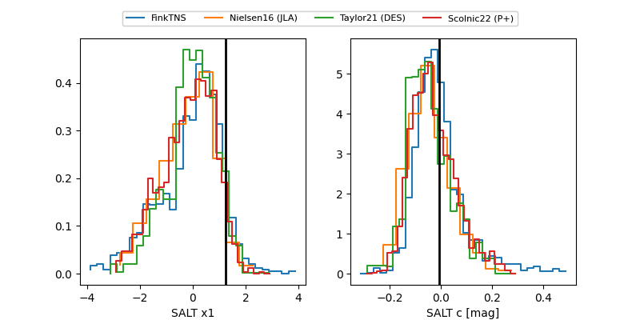

2025ahcd
Target 2025ahcd at 2025-12-29 10:01
Aliases and brokers:
FINK: fink-portal.org/ZTF25achiukc
Lasair: lasair-ztf.lsst.ac.uk/objects/ZTF25achiukc
ALeRCE: alerce.online/object/ZTF25achiukc
TNS: wis-tns.org/object/2025ahcd
YSE: ziggy.ucolick.org/yse/transient_detail/2025ahcd
alt names
ZTF25achiukc (ztf,fink_ztf)
2025ahcd (tns,yse)
ATLAS25qdx (atlas)
Coordinates:
equatorial (ra, dec) = 121.4170,+6.74948
equatorial (HMS+DMS) = 08:05:40.08,+06:44:58.11
galactic (l, b) = (215.3354,+19.56480)
Flags:
Photometry:
last ztfg=19.14, ztfr=19.10
6 ztfg, 5 ztfr detections
Lightcurve

Visibility


Additional plots
